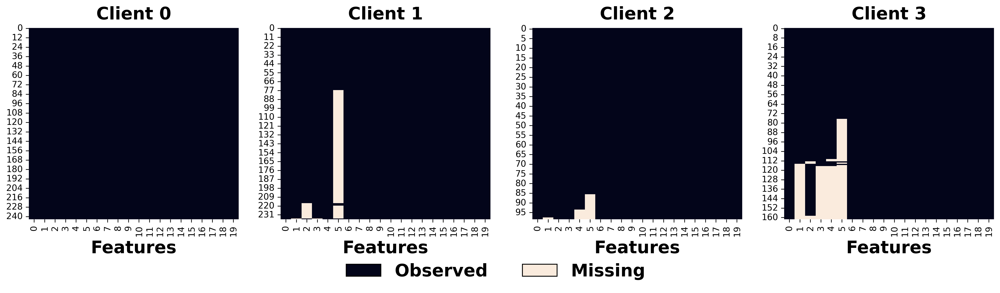
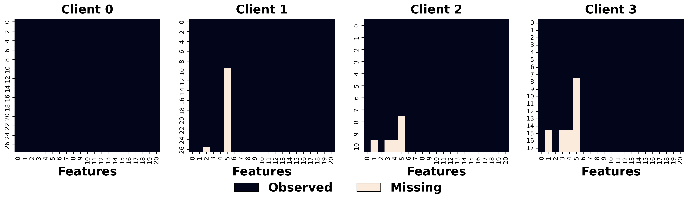

import numpy as np
import pandas as pd
import tabulate
Load Data
%load_ext autoreload
%autoreload 2
from fedimpute.data_prep import load_data, display_data, column_check
from fedimpute.scenario import ScenarioBuilder
data, data_config = load_data("fed_heart_disease")
scenario_builder = ScenarioBuilder()
scenario_data = scenario_builder.create_real_scenario(
data, data_config,
)
scenario_builder.summarize_scenario()
==================================================================
Scenario Summary
==================================================================
Total clients: 4
Global Test Data: (94, 21)
Missing Mechanism Category: MCAR
Clients Data Summary:
Train Test Miss MS Ratio MS Feature Seed
-- -------- ------- -------- ---------- ------------ ------
C1 (244,21) (28,21) (244,20) 0.00 0/20 6077
C2 (237,21) (27,21) (237,20) 0.04 4/20 577
C3 (99,21) (11,21) (99,20) 0.01 3/20 7231
C4 (162,21) (18,21) (162,20) 0.07 5/20 5504
==================================================================
scenario_builder.visualize_missing_pattern(
client_ids=[0, 1, 2, 3], data_type='train', fontsize=20, save_path='./plots/real_pattern_train.png'
)

scenario_builder.visualize_missing_pattern(
client_ids=[0, 1, 2, 3], data_type='test', fontsize=20, save_path='./plots/real_pattern_test.png'
)

Running Federated Imputation
%load_ext autoreload
%autoreload 2
from fedimpute.execution_environment import FedImputeEnv
env = FedImputeEnv(debug_mode=False)
env.configuration(imputer = 'mice', fed_strategy='fedmice', workflow_params = {})
env.setup_from_scenario_builder(scenario_builder = scenario_builder, verbose=1)
env.show_env_info()
env.run_fed_imputation(verbose=1)
The autoreload extension is already loaded. To reload it, use:
%reload_ext autoreload
[1mSetting up clients...[0m
[1mSetting up server...[0m
[1mSetting up workflow...[0m
[1mEnvironment setup complete.[0m
============================================================
Environment Information:
============================================================
Workflow: ICE (Imputation via Chain Equation)
Clients:
- Client 0: imputer: mice, fed-strategy: fedmice
- Client 1: imputer: mice, fed-strategy: fedmice
- Client 2: imputer: mice, fed-strategy: fedmice
- Client 3: imputer: mice, fed-strategy: fedmice
Server: fed-strategy: fedmice
============================================================
[32m[1mImputation Start ...[0m
ICE Iterations: 0%| | 0/20 [00:00<?, ?it/s]
Feature_idx: 0%| | 0/20 [00:00<?, ?it/s]
Feature_idx: 0%| | 0/20 [00:00<?, ?it/s]
Feature_idx: 0%| | 0/20 [00:00<?, ?it/s]
Feature_idx: 0%| | 0/20 [00:00<?, ?it/s]
Feature_idx: 0%| | 0/20 [00:00<?, ?it/s]
Feature_idx: 0%| | 0/20 [00:00<?, ?it/s]
Feature_idx: 0%| | 0/20 [00:00<?, ?it/s]
Feature_idx: 0%| | 0/20 [00:00<?, ?it/s]
Feature_idx: 0%| | 0/20 [00:00<?, ?it/s]
Feature_idx: 0%| | 0/20 [00:00<?, ?it/s]
[32m[1mFinished. Running time: 1.0724 seconds[0m
Evaluation
%load_ext autoreload
%autoreload 2
from fedimpute.evaluation import Evaluator
evaluator = Evaluator()
X_trains, y_trains = env.get_data(client_ids='all', data_type = 'train', include_y=True)
X_tests, y_tests = env.get_data(client_ids='all', data_type = 'test', include_y=True)
X_train_imps = env.get_data(client_ids='all', data_type = 'train_imp')
X_test_imps = env.get_data(client_ids='all', data_type = 'test_imp')
data_config = env.get_data(data_type = 'config')
ret = evaluator.evaluate_local_pred(
X_train_imps = X_train_imps,
y_trains = y_trains,
X_tests = X_test_imps,
y_tests = y_tests,
data_config = data_config,
model = 'nn',
seed= 0
)
evaluator.show_local_pred_results()
The autoreload extension is already loaded. To reload it, use:
%reload_ext autoreload
Clients: 0%| | 0/4 [00:00<?, ?it/s]
[1mEarly stopping at epoch 316[0m
[1mEarly stopping at epoch 324[0m
[1mEarly stopping at epoch 249[0m
[1mEarly stopping at epoch 288[0m
==========================================================
Downstream Prediction (Local)
==========================================================
accuracy f1 auc prc
---------- ---------- ---------- ---------- ----------
Client 1 0.607 0.645 0.708 0.742
Client 2 0.852 0.778 0.953 0.933
Client 3 0.909 0.952 0.100 0.848
Client 4 0.722 0.828 0.631 0.799
---------- ---------- ---------- ---------- ----------
Average 0.773 0.801 0.598 0.831
Std 0.117 0.110 0.311 0.070
==========================================================
Federated Prediction
X_train_imps = env.get_data(client_ids='all', data_type = 'train_imp')
X_test_imps = env.get_data(client_ids='all', data_type = 'test_imp')
X_global_test_imp = env.get_data(data_type = 'global_test_imp')
_ , y_trains = env.get_data(
client_ids='all', data_type = 'train', include_y=True
)
_ , y_tests = env.get_data(
client_ids='all', data_type = 'test', include_y=True
)
_, y_global_test = env.get_data(
data_type = 'global_test', include_y = True
)
data_config = env.get_data(data_type = 'config')
ret = evaluator.evaluate_fed_pred(
X_train_imps = X_train_imps,
y_trains = y_trains,
X_tests = X_test_imps,
y_tests = y_tests,
X_test_global = X_global_test_imp,
y_test_global = y_global_test,
data_config = data_config,
train_params = {
'global_epoch': 100,
'local_epoch': 10,
'fine_tune_epoch': 200,
},
seed= 0
)
evaluator.show_fed_pred_results()
Global Epoch: 0%| | 0/100 [00:00<?, ?it/s]
[1mEpoch 0 - average loss: 0.6512317483623822[0m
[1mEpoch 10 - average loss: 0.5921915372212728[0m
[1mEarly stopping at epoch 11[0m
[1mEpoch 20 - average loss: 0.544242156876458[0m
[1mEpoch 30 - average loss: 0.5479222436745962[0m
[1mEarly stopping at epoch 30[0m
[1mEpoch 40 - average loss: 0.5100965698560079[0m
[1mEarly stopping at epoch 49[0m
[1mEpoch 50 - average loss: 0.48613545298576355[0m
[1mEarly stopping at epoch 51[0m
[1mEarly stopping at epoch 72[0m
===============================================================
Downstream Prediction (Fed)
===============================================================
Personalized accuracy f1 auc prc
-------------- ---------- ---------- ---------- ----------
Client 1 0.679 0.710 0.815 0.838
Client 2 0.852 0.778 0.976 0.962
Client 3 0.909 0.952 0.700 0.970
Client 4 0.833 0.897 0.523 0.716
---------- ---------- ---------- ---------- ----------
Global 0.798 0.812 0.873 0.860
===============================================================